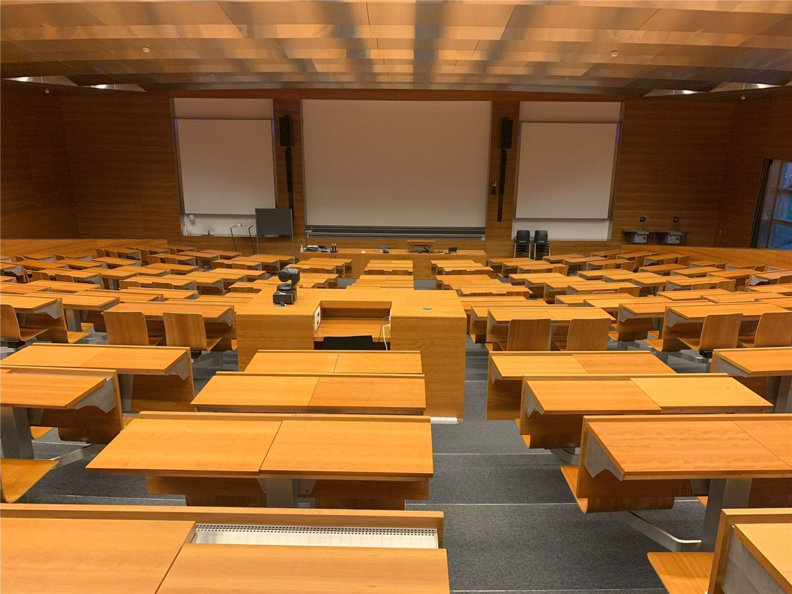
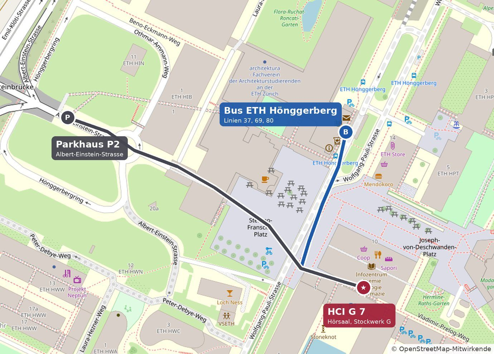

11:45
Bitte bis 11:45 im Hörsaal sein.
Der Vortrag beginnt um 12:00. Wer später kommt, wartet bitte vor der Tür bis ca. 12:20.
Wo genau?
- HCI
- Name des Gebäudes
- G
- Stockwerk: 2. Obergeschoss
- 7
- Nummer des Hörsaals
- Bus bis Haltestelle ETH Hönggerberg oder Auto ins Parkhaus P2.
- Zu Fuss zum Gebäude HCI, erste Tür links. 2 Min. ab Bus, 5 Min. ab Parkhaus.
- Lift auf G = 2. Obergeschoss, Schildern „G 7“ folgen.

Ablauf
- 11:45EintreffenHörsaal HCI G 7
- 12:00Vortragca. 20 Minuten, öffentlich
- 12:20Apérodirekt vor dem Hörsaal, Benjamin ist in der Prüfung
- ~14:30Bekanntgabe des Ergebnissesdanach Dank und Doktorhut
- ~15:30Ende
Apéro
Alle sind herzlich eingeladen. Direkt vor dem Hörsaal.
- Kalte Platten, Brot, Vegetarisches
- Wein, Bier, Mineral, Softdrinks
Nebenan laufen Vorlesungen, bitte leise sein.
Anreise
Mit ÖV
Ab Zürich HB, ca. 25 Min.
- Tram 11ab Bahnhofquai/HB bis Bucheggplatz, umsteigen
- Bus 69bis ETH Hönggerberg
Ab Bahnhof Oerlikon
- Bus 80ab Bahnhof Oerlikon Nord bis ETH Hönggerberg
Ticket: Zone 110. SBB-App: „Zürich, ETH Hönggerberg“.

Mit dem Auto
Parkhaus P2, Albert-Einstein-Strasse, 8093 Zürich. 5 Min. zu Fuss.
Kostenpflichtig, Plätze knapp.

ab Bus, 2 Min.ab Parkhaus P2, 5 Min.